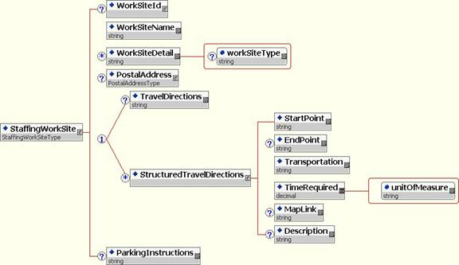

Staffing Work Site
Recommendation, 2007 April 15
Editors:
Kim Bartkus, HR-XML Consortium
Contributors:
Gail Bubsey (Kelly Services ), Kim Bartkus (HR-XML Consortium), Barbara Johnson (Adecco NA), Tara Ryan (Adecco), Kazuko Sugamura (Manpower Japan), Takahiro Fujiwara (EAST Co., Ltd.), Magali Munoz (Manpower France), Bruno Alcotte (Manpower France), Rémy Bailly (Randstad), Yves Berdah (VidiorBis), Serguei Dounaevetski (Manpower France), Patrice Aranega (Adecco France)
Copyright © 2007 HR-XML Consortium, Inc.
Abstract
The document defines the work site and worksite environment information, which may be used for a variety of business processes such as a temporary staffing order or posting a position.
Table of Contents
1.2 Relationship to Business Processes
3 Implementation Considerations
4 Appendix A - Revision History
5 Appendix B - Related Documents
1 Overview
Changes were made to the base SIDES specification based on feedback from the European and Japanese Chapters. If available, localized items are documented in section 4 Implementation Considerations or in individual country documentation. Refer to Appendix A - Document Version History for details.
1.1 Objective
The StaffingWorkSite and StaffingWorkSiteEnvironment schemas allow the exchange of work site and environment conditions.
The Staffing schemas are similar to the CPO WorkSite and WorkSiteEnvironment schemas. Both versions allow the exchange of work site information. However, the Staffing versions were created first, followed by the CPO versions. Information has been added to either version as needed. At a future date, the CPO version will be updated to reflect any requirements for Staffing. At which time the Staffing version will be replaced by the CPO version. This will not be a backwards compatible change.
1.2 Relationship to Business Processes
1.3 Scope
1.3.1 Within Scope
These versions of WorkSite and WorkSiteEnvironment will belong to the SIDES workgroup. They will contain:
· Information pertaining to the site or location of a job or position.
· Information pertaining to the environment of a job or position.
General Considerations
Physical Considerations
Safety Equipment
Dress Code
1.4 Design Requirements
· Syntax MUST be self-documenting
· Schema MUST be easy to understand and use
· Backwards compatible with SIDES 1.0
· Must take into consideration global requirements
2 Schema/DTD Design
2.1 WorkSite
2.1.1 Schema

2.1.2 Data Dictionary
|
Elements and Attributes [Global types listed alphabetically in following table.] |
ContentModel* |
Definition |
|
/ |
- StaffingWorkSiteType - (1/1) |
Contains common Work Site information, including name, address travel directions, and parking instructions. |
|
/ StaffingWorkSite/ |
Id - xsd:string
- S (1/1) |
Unique Identifier for a particular worksite. |
|
/ StaffingWorkSite/ WorkSiteId/ |
- xsd:string - S (1/1) |
A unique identifier used to reference the entity. The Id is associated with the higher level element. |
|
/ StaffingWorkSite/ WorkSiteId/ |
IdIssuer - xsd:string - S (0/1) |
Contains the domain information for the Id. |
|
/ StaffingWorkSite/ WorkSiteId/
Domain/ |
- xsd:string - S (0/1) |
The entity responsible for the issuing Id. |
|
/ StaffingWorkSite/ WorkSiteId/
Domain/ |
- xsd:string - S (0/1) |
Information that can be used to help identify the job or position. |
|
/ StaffingWorkSite/ |
- xsd:string - S (1/1) |
Contains a name or brief description of the worksite. |
|
/ StaffingWorkSite/ |
xsd:extension base: xsd:string |
Describes any information not previously defined. |
|
/ StaffingWorkSite/
WorkSiteDetail/ |
- xsd:string - |
Specifies the type or purpose of
the worksite. |
|
/ StaffingWorkSite/ |
- PostalAddressType - S (0/1) |
A mailing address. Describes a postal address used for delivery of mail. The address may include the country code, postal code, a region, municipality, delivery address, and the recipient. |
|
/ StaffingWorkSite/ |
- xsd:string - C (0/1) |
Provides directions to the site. These could include directions by bus, air, car, walking, etc. |
|
/ StaffingWorkSite/ |
StartPoint - xsd:string - S (1/1) |
Contains directions to the site. These could include directions by bus, air, car, walking, etc. |
|
/ StaffingWorkSite/
StructuredTravelDirections/ |
- xsd:string - S (1/1) |
Describes the starting point for
directions. |
|
/ StaffingWorkSite/
StructuredTravelDirections/ |
- xsd:string - S (0/1) |
Describes the ending point for
directions. |
|
/ StaffingWorkSite/
StructuredTravelDirections/ |
- xsd:string - S (1/1) |
Describes the method of
transportation. |
|
/ StaffingWorkSite/
StructuredTravelDirections/ |
xsd:extension base: xsd:decimal |
Describes the estimated time to
complete the trip. |
|
/ StaffingWorkSite/
StructuredTravelDirections/ TimeRequired/ |
- xsd:string - |
Unit in which the quantity is
measured. |
|
/ StaffingWorkSite/
StructuredTravelDirections/ |
- xsd:string - S (0/1) |
An URL to a map or other travel directions. |
|
/ StaffingWorkSite/ StructuredTravelDirections/ |
- xsd:string - S (0/1) |
Describes the contextual information relating to a specific element. |
|
/ StaffingWorkSite/ |
- xsd:string - S (0/1) |
Provides instructions for
parking, including fees. |
2.2 WorkSiteEnvironment
2.2.1 Schema
2.2.2 Data Dictionary
|
Elements and Attributes [Global types listed alphabetically in following table.] |
ContentModel* |
Definition |
|
/ |
- StaffingWorkSiteEnvironmentType - (1/1) |
Contains common Work Site Environment information, including description, physical considerations, dress code, and safety equipment. |
|
/ StaffingWorkSiteEnvironment/ |
Id - xsd:string
- S (1/1) |
Unique Id to define the worksite environment. |
|
/ StaffingWorkSiteEnvironment/
EnvironmentId/ |
- xsd:string - S (1/1) |
A unique identifier used to reference the entity. The Id is associated with the higher level element. |
|
/ StaffingWorkSiteEnvironment/
EnvironmentId/ |
IdIssuer - xsd:string - S (0/1) |
Contains the domain information for the Id. |
|
/ StaffingWorkSiteEnvironment/
EnvironmentId/ Domain/ |
- xsd:string - S (0/1) |
The entity responsible for the issuing Id. |
|
/ StaffingWorkSiteEnvironment/
EnvironmentId/ Domain/ |
- xsd:string - S (0/1) |
Information that can be used to help identify the job or position. |
|
/ StaffingWorkSiteEnvironment/ |
- xsd:string - S (1/1) |
Contains a name or brief description
of the worksite environment. |
|
/ StaffingWorkSiteEnvironment/ |
- xsd:string - S (0/1) |
Describes any environment information not previously defined. |
|
/ StaffingWorkSiteEnvironment/ |
xsd:extension base: xsd:string |
Describes any special
considerations for the environment. |
|
/ StaffingWorkSiteEnvironment/
EnvironmentConsideration/ |
- xsd:boolean - |
Specifies whether items listed in
the EnvironmentConsiderations are provided by the organization. |
|
/ StaffingWorkSiteEnvironment/
EnvironmentConsideration/ |
xsd:restriction base: xsd:string [Enumerations]: General, Physical, SafetyEquipment, DressCode, SafetyAndHygiene |
General - Additional information on the work environment, which may be useful to both the Staffing Supplier and Human Resource. e.g. lunch facility, smoke free, etc. Physical - description of physical aspects of the environment, which may influence the Staffing Supplier or the Human Resource when the position or assignment is offered. Ex. Wheelchair accessible, No elevator. Safety Equipment – description of specific pieces of safety equipment required in the environment. Ex. Steel-toed shoes, Hard Hat, Safety Glasses Dress Code – description of dress requirements for t he environment. Ex. Business Casual, Tie, Suit. Safety And Hygiene – description of the environment specifically as it relates to safety and hygiene considerations. Ex. Climate Controlled, High Dust Levels, Bio-hazardous Materials. |
3 Implementation Considerations
3.1 Data Privacy
Human resources data, by its very nature, is personal data. The laws of many jurisdictions as well as codes of fair information practice require organizations to handle personal data in a way that protects individuals from loss of privacy.
The data exchange specifications developed by the HR-XML Consortium are designed to be useful across many jurisdictions and within a variety of business contexts. It is not feasible for the HR-XML Consortium to develop specific privacy guidance for every jurisdiction or business context in which the Consortium's specifications might be implemented. When implementing data exchanges using the HR-XML Consortium's data definitions (or, for that matter, using any other type of data exchange mechanism), organizations are advised to examine the privacy protections that may be required under applicable law and codes of fair information practice.
For information on protecting personal data, general references include: European Union Data Protection Directive (95/46/EC); the Association Computing Machinery Code of Ethics (1992); Canadian Standards Association Model Code for the Protection of Personal Information (1995 – PIPEDA); and U.S.-EU Safe Harbor Principles and FAQs (2000).
4 Appendix A - Revision History
|
Date |
Description |
|
2002-Dec-10 |
Initial draft |
|
2002-Dec-11 |
Updated document based on SIDES feedback. |
|
2003-Jan-13 |
Renamed doc to StaffingWorkSite and schemas to StaffingWorkSite, StaffingWorkSiteEnvironment. |
|
2003-Feb-06 |
WorkSiteType - corrected table, removed incorrect default. |
|
2003-Feb-26 |
Approved recommendation by HR-XML Consortium. The default and targetNamespaces of all HR-XML schemas have been standardized to "http://ns.hr-xml.org". This recommendation is available as part of the HR-XML 2_0 architecture. |
|
2004-Aug-02 |
Changed WorkSiteId and WorkSiteEnvironmentId to optional. |
|
2006-Feb-28 |
Approved by Consortium |
|
2006-Mar-01 |
Added StructuredTravelDirections to StaffingWorkSite. Added 'SafetyAndHygiene' enumeration to EnvironmentConsiderations of StaffingWorkSiteEnvironment. |
|
2007-Apr-15 |
Approved by Consortium |
5 Appendix B - Related Documents